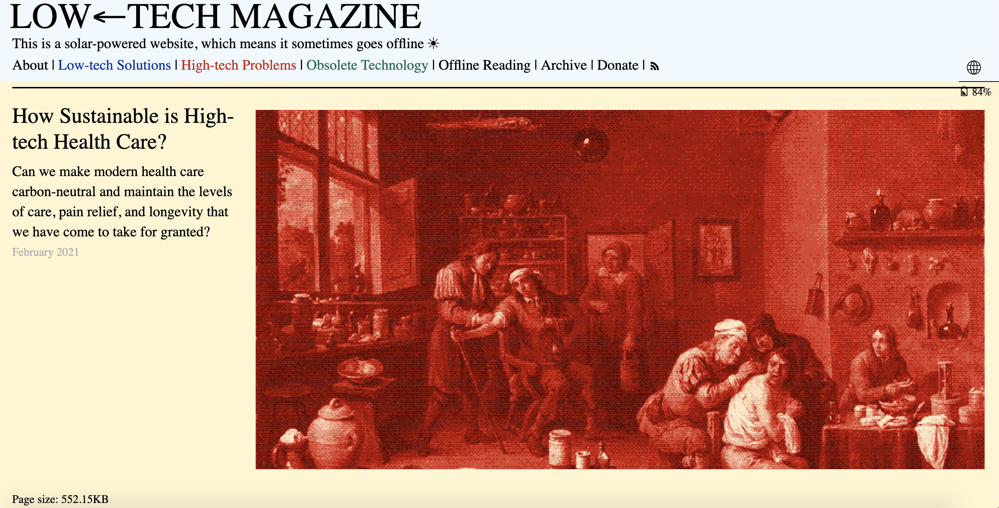
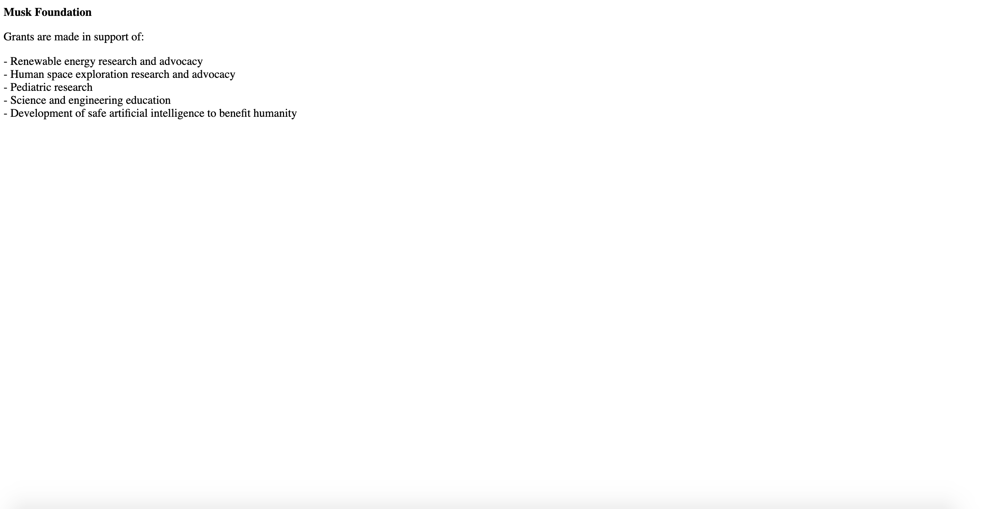

about this site
This site has been designed to minimze its ecological footprint.
It's built using a static site generator I designed + developed called Planted.
Planted is still very much a work in progress, but it looks to the site developed by Low Tech Magazine for inspiration.

This site uses one font (Space Mono) and only two colors, a pale green and dark blue. There is no JavaScript used on the frontend, to minimize the weight of each page and thereby also reducing the amount of energy required to request and render it (it also makes the site much more performant). While the energy used to render + view my personal site may not be particularly significant, with carbon emissions rapidly rising from the increase in data traffic and growing size of websites, I feel that making design + engineering decisions to minimize my own site upholds my own values and also presented an interesting design challenge. Of course, this isn't the simplest site nor do the pages have the absolute smallest weights (for an example of the most extreme in small page weights, look to the Musk Foundation website, with a weight of less than 7 kb).
While minimal in page weight, the Musk Foundation site is not the most attractive
But as a designer and artist, aesthetics are still very important to me. I wanted my site to look clean, polished and well designed while still following Sustainable UX practices as best I can. Some compromise was necessary.
I also chose to forgo a lot of the motion design/interactive features I see on many portfolio sites. I tend to find a lot of the effects used on such flashy sites are a bit distracting - if I want to showcase some interaction design, I'll link out to a project rather than try to cram everything into my portfolio site.
If you are interested in collaborating around digital sustainability, please feel free to reach out to me via email.